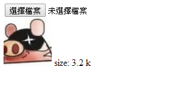

ngFileReader

This is file reader component on angular.
LiveDemo
Support
- IE8+
- chrome
- firefox
Dependency
- angularjs
- jQuery
- FileReader
You need load jQuery and FileReader if browser is not support FileReader.
And The base64 size only limit 32kb if you use base64 to set image on IE8.
You also use other FileReader version,if you don't want to use fixed position by flash.
Install
bower install ngFileReaderUsage
Set some attrs of element.
<div ng-file-reader on-readed="onReaded( event, file )" read-method="readMethod" multiple></div>
size:{{file.size | fileSize}}
<img ng-src="{{img}}">Set a reader method.
$scope.readMethod = "readAsDataURL";Add a on-readed callback to set file size and img data.
$scope.onReaded = function( e, file ){
$scope.img = e.target.result;
$scope.file = file;
};Attribute
filereader
This is swf path, if you use ie8 ~ ie9.
multiple
Input multiple property.
debug-mode
Use swf only.
ex:
Set the attr on tag.
debug-mode="true"
accept
accept file extensions.
Parameter
read-method
This is file reader method,when you selected file to call read-method method.
ex: readAsDataURL、readAsText、readAsBinaryString
Set the attr.
read-method="readMethod"Set a string value.
$scope.readMethod = "readAsDataURL"Event
on-selected Event
It will trigger this event if you has selected.
on-readed Event
It will trigger this event When the selected file has readed by file reader.
Filter
fileSize
Transfer file size from number to unit.
<!-- 1048576 => 1 m -->
{{file.size | fileSize}}You can write this if you need round off to the 2nd decimal place.
{{file.size | fileSize:2}}Run
run a server:
grunt serverFinally,open your brower,enter http://localhost:3000/example/index.html.
Minification
Just run npm install to install dependencies. Then run grunt for minification.